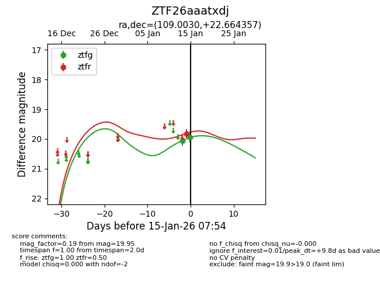
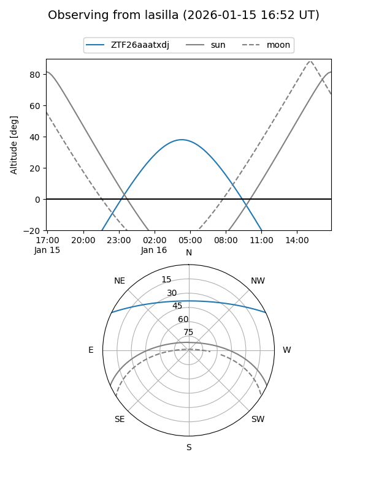
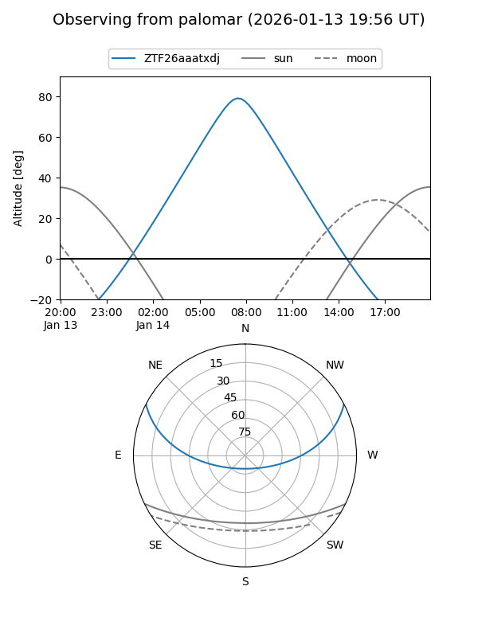
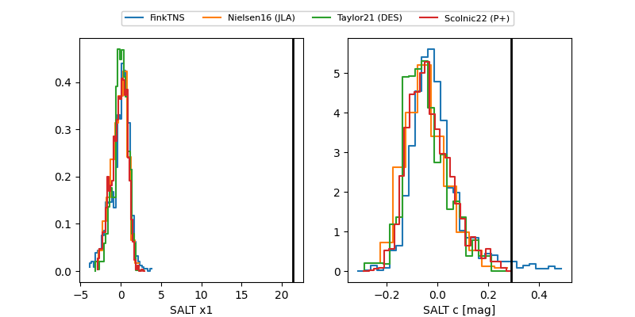

ZTF26aaatxdj
Target ZTF26aaatxdj at 2026-01-15 07:55
Aliases and brokers:
FINK: link
Lasair: link
ALeRCE: link
alt names
ZTF26aaatxdj (ztf,fink_ztf)
Coordinates:
equatorial (ra, dec) = 109.0030,+22.66436
equatorial (HMS+DMS) = 07:16:00.72,+22:39:51.68
galactic (l, b) = (194.9430,+15.28356)
Flags:
Photometry:
last ztfg=19.95, ztfr=19.81
2 ztfg, 1 ztfr detections
Lightcurve

Visibility


Additional plots
